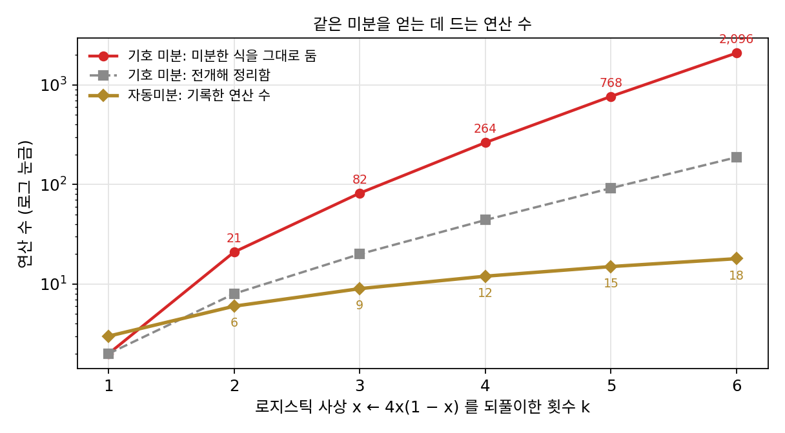
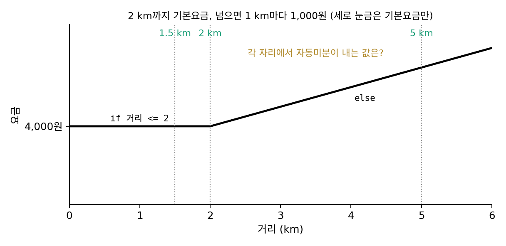
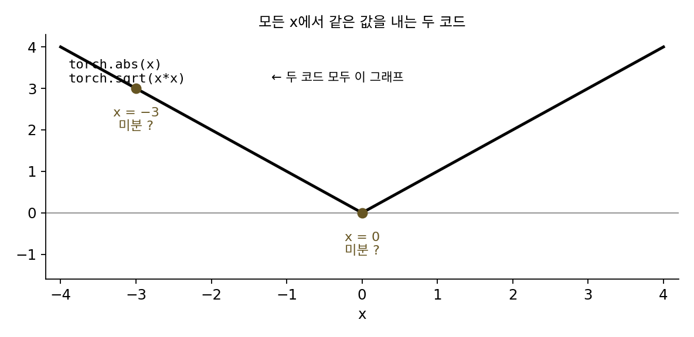
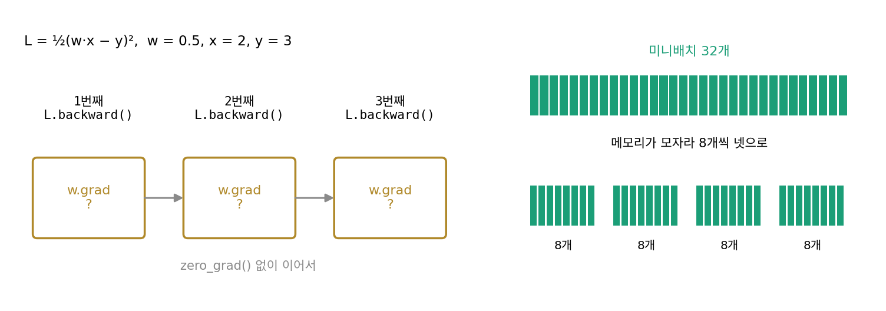

자동미분: 식이 아니라 코드를 미분한다
역전파를 하려면 계산 그래프가 있어야 한다. 뉴런 하나는 손으로 그릴 수 있었지만, 실제 신경망은 반복문으로 층을 쌓고 조건문으로 가지를 나누는 수천 줄짜리 코드다. 그 그래프는 누가 그리나? 컴퓨터에게 미분을 시키는 옛 방법은 둘이었다. 하나는 미분 공식을 써서 도함수 식을 만드는 기호 미분이고, 다른 하나는 손실값만 쓰는 유한 차분이다. 둘 다 코드에 그대로 쓰기에는 무언가 모자랐는데, 무엇이 모자랐고 코드를 그대로 미분하는 방법은 어떻게 생겼을까?
역사: 컴파일러에서 다시 찾은 역방향
역방향 계산을 사람 손 없이 프로그램이 만들어 주게 한 이른 시도로는 베른트 스페일페닝(Bernt Speelpenning)의 1980년 일리노이 대학교 박사 논문이 있다. 논문 제목은 「알고리즘으로 주어진 함수의 빠른 편미분 컴파일하기(Compiling Fast Partial Derivatives of Functions Given by Algorithms)」다. 그리반크의 글에 따르면 스페일페닝은 빌 기어(Bill Gear)에게서 뻣뻣한 미분방정식(빠른 변화와 느린 변화가 섞인 방정식)의 자코비안을 계산하는 코드를 자동으로 만들라는 과제를 받았고, 컴파일러 최적화를 궁리하다 역방향에 닿았다. 그는 함수를 계산하는 동안 일어난 연산을 하나하나 차례로 쌓아 두고, 그 더미를 거꾸로 꺼내며 미분하는 그림을 그렸다.
그 뒤에도 이 방법은 여러 번 다시 발견되었다. 그리반크 자신도 1987년 여름 미국 아르곤 국립연구소에 막 갔을 때, 호르헤 모레(Jorge Moré)에게서 「그래디언트를 함수와 비슷한 비용으로 계산할 수 없는 목적함수의 예를 하나 들어 보라」는 도전을 받고 역방향을 혼자 다시 찾았다고 적었다. 연산 하나하나에 미분 규칙을 붙이는 방식(연산자 오버로딩)으로 역방향을 처음 구현한 것은 구간 계산을 위해 파스칼을 넓힌 언어 PASCAL-SC였다고 그는 적었다.

린나인마가 1970년에, 스페일페닝이 1980년에 찾았는데 그리반크가 1987년에 또 혼자 찾았다고요? 이미 있는 방법을 왜 자꾸 다시 찾아요?

모레가 그리반크에게 낸 도전을 다시 읽어 볼까요?

「그래디언트를 함수와 비슷한 비용으로 계산할 수 없는 목적함수의 예를 들어 보라」… 음, 그런 예가 쉽게 나올 거라고 보고 낸 도전처럼 들려요.

그렇게 들릴 만해요. 바로 몇 해 전인 1982년에 울프가 「흔한 오해」라고 적은 것이, 그래디언트는 함수 비용의 (n + 1)배가 든다는 생각이었어요. 스페일페닝의 결과는 박사 논문 한 편에 있었고, 그리반크는 그것을 전해 듣지 않고 혼자 다시 찾았다고 적었죠.

지금은 pip install torch 한 줄이면 역방향이 따라오는데, 그때는 방법이 논문 속에만 있어서 그 논문을 찾아 읽지 않으면 없는 거나 마찬가지였네요.
그리고 스페일페닝이 받은 일은 사람이 넘겨준 식이 아니라, 이미 짠 계산 코드에서 자코비안 코드를 자동으로 만드는 것이었어요.
그래서 연산을 하나하나 쌓아 두고 거꾸로 꺼낸 거군요. 그런데 코드를 식 하나로 바꿔 놓고 미분 공식을 쓰면 안 되나요? 그렇게 하면 어디서 막혀요?
로지스틱 사상을 여섯 번 되풀이하면
기호 미분이 무엇에 막히는지 보려면, 코드로는 짧은데 식으로 풀면 길어지는 함수가 좋다. 반복문이 바로 그런 것을 만든다. x를 4x(1 − x)로 바꾸는 일(로지스틱 사상)을 k번 되풀이하는 함수를 보자. 코드로는 반복문 세 줄이다. 그런데 이 함수를 식 하나로 적으면 4x(1 − x)가 k번 겹친 식이 되고, 기호 미분은 그 겹친 식에 곱의 미분 법칙을 겹겹이 적용한다. 수식 처리 프로그램 심파이(sympy)로 식을 만들고 미분해 연산 수를 세었다.
| 되풀이 횟수 k | 함수 식의 연산 수 | 미분한 식의 연산 수 (그대로) | 미분한 식의 연산 수 (전개해 정리) | 자동미분이 기록한 연산 수 |
|---|---|---|---|---|
| 1 | 3 | 2 | 2 | 3 |
| 2 | 8 | 21 | 8 | 6 |
| 4 | 38 | 264 | 44 | 12 |
| 6 | 158 | 2,096 | 188 | 18 |
미분한 식은 되풀이할 때마다 세 배 가까이 길어지고, 전개해 정리해도 두 배씩 길어진다. k = 6의 식은 x에 대한 63차 다항식이다. 같은 부분식이 식 안에 여러 번 나타나는데, 식으로 적는 한 그것을 한 번만 계산하고 나눠 쓸 수가 없다. 기호 미분을 막은 것은 미분 규칙보다, 계산을 「식」이라는 꼴로 옮겨 적는 일이었다.
유한 차분은 식을 만들지 않으니 이 문제가 없지만, 근삿값일 뿐이다. k = 6, x = 0.3에서 참값 f′ = −65.1931590859에 대해 간격 h를 줄여 가며 (f(x + h) − f(x))/h를 계산하면, 오차는 h = 10⁻⁶에서 1.8 × 10⁻³, 10⁻⁸에서 1.8 × 10⁻⁵, 10⁻¹⁰에서 6.8 × 10⁻⁶으로 줄어든다. 그런데 h를 더 줄이면 실수의 반올림 오차 때문에 오차가 오히려 커져 h = 10⁻¹²에서 4.7 × 10⁻³, 10⁻¹⁴에서는 0.049가 되므로, 아무리 간격을 골라도 열 자리 넘게 맞히지는 못한다. 게다가 유한 차분은 파라미터 하나마다 한 번씩 계산해야 한다.
세 번째 길은 식을 만들지 않고 코드를 실행하면서, 실제로 일어난 연산을 하나씩 기록하는 것이다. 되풀이 한 번에 곱셈 4·x, 뺄셈 1 − x, 두 값의 곱셈이 일어나므로 연산이 셋씩 기록된다. k = 6이면 기록은 18칸이고, 그 기록을 거꾸로 훑는 데 곱셈은 18번이다. 결과는 −65.1931590859로, 기호 미분의 값과의 차이가 4.3 × 10⁻¹⁴이다. 기록이 바로 계산 그래프다. 그래프를 사람이 미리 그리지 않아도, 코드가 실행되는 순서를 따라 저절로 그려진다. 이렇게 프로그램이 실행하는 기본 연산마다 미분 규칙을 붙이고, 실행된 연산의 기록 위에서 연쇄법칙을 계산해 정확한 미분값을 내는 방법을 자동미분 (코드를 그대로 미분하기 / automatic differentiation)이라 한다. 기록을 앞으로 훑으면 순방향 모드, 거꾸로 훑으면 역전파이고, 어느 방향으로 훑든 미분하는 대상은 그 순간 실행된 연산의 기록이다.

ML에서: 파이토치는 실행하면서 그래프를 만든다
파이토치의 자동미분(autograd)은 이 방식을 그대로 쓴다. requires_grad=True인 텐서에서 시작한 연산은 실행될 때마다 「어느 연산이었고 무엇이 들어왔나」를 기록에 남기고, loss.backward()가 그 기록을 거꾸로 훑는다. 파이토치 팀이 2017년 NIPS 자동미분 워크숍에 낸 글 「파이토치의 자동미분(Automatic differentiation in PyTorch)」은 이것을 미리 그래프를 정의해 두고 기호로 미분하는 방식과 견주어, 순수하게 명령형으로 짠 프로그램(한 줄씩 차례로 실행되는 보통의 파이썬 코드)을 미분하는 방식이라고 설명한다. 같은 글은 이 방식이 루아 토치(Lua Torch), 체이너(Chainer), HIPS 오토그래드(Autograd) 같은 앞선 프로젝트를 이어받았다고 밝힌다. 그래프가 스텝마다 새로 그려지므로 반복 횟수가 입력마다 다른 반복문이나 데이터에 따라 갈리는 조건문도 그대로 미분된다. 그 대가로, 코드가 무엇을 실행했느냐가 곧 미분의 내용이 된다.
문제 7. 택시 요금표의 그래디언트
어느 도시의 택시 요금은 2 km까지 기본요금 4,000원이고, 2 km를 넘으면 넘은 거리 1 km마다 1,000원이 붙는다(이 책에서 지은 요금표). 이 요금표를
if 거리 <= 2: 요금 = 4000 else: 요금 = 4000 + 1000*(거리 − 2)로 짰다. (가) 1.5 km와 5 km에서 요금은? (나) 자동미분으로 「거리가 조금 늘면 요금이 얼마나 느나」를 구하면 각각 얼마가 나오는가? (다) 거리가 정확히 2 km이면 무엇이 나오겠는가? 2 km에서 나온 미분은 「맞는」 답인가?


(가)는 4,000원과 7,000원이요. (나)는 평균으로 보면 5 km에 7,000원이니까 1 km당 1,400원 아닌가요?
자동미분은 무엇을 기록한다고 했죠? 5 km일 때 코드가 실제로 실행한 줄은 어느 쪽인가요?
else 쪽이요. 기록에는 4,000 + 1,000 × (거리 − 2)만 남으니까 미분은 1,000원/km예요. 평균 요금보다는 5 km에서 1 km 더 가면 붙는 돈이네요. 1.5 km는 if 쪽이라 기록에 거리가 상수 4,000에만 이어져서 0원/km이고요.
파이토치로 돌려 봐도 0과 1,000이 나와. (다)는 2 km면 「2 이하」 조건에 걸리니까 if 쪽이 실행돼서 0이야.
2 km에서 오른쪽으로 조금 가면 요금이 얼마씩 오르죠? 왼쪽으로 조금 가면요?
오른쪽으로는 1,000원/km, 왼쪽으로는 0이에요. 어, 그럼 2 km에서는 미분이 하나로 정해지지 않네요. 함수가 그 점에서 꺾여 있어요.
그런데 자동미분은 2 km에서 뭐라고 답했죠?

0이라고 딱 잘라 말했어요. 조건을 거리 < 2로 바꿔 짜면 같은 요금표인데 1,000이 나오겠네요. 해석학 시간에 꺾인 점에서는 왼쪽 미분과 오른쪽 미분을 따로 봐야 한다고 배웠는데, 자동미분은 둘 중 코드가 고른 쪽 하나만 줘요.

조교님이 「제출 시각 기준」으로만 지각을 따지니까 마감 정각에 낸 사람은 지각이 아닌데, 1초 늦으면 지각인 거랑 같네요. 경계에서는 규칙을 어떻게 적었느냐가 답을 정해요.
문제 8. 같은 함수, 다른 코드
절댓값 함수를
torch.abs(x)와torch.sqrt(x*x)두 가지로 짰는데, 두 코드는 모든 x에서 같은 값을 낸다. (가) x = −3에서 두 코드의 자동미분 값은? (나) x = 0에서는? (다) 두 코드가 같은 함수인데 미분이 다르다면, 자동미분이 틀린 것인가?

같은 함수니까 미분도 같겠죠. x = −3에서는 둘 다 −1이고, x = 0에서는 꺾인 점이니까 둘 다 0쯤 나올 것 같아요. 돌려 볼게요… −3에서는 둘 다 −1.0이에요. 그런데 0에서 abs는 0.0인데 sqrt(x*x)는 nan이에요!
nan은 계산할 수 없는 값이라는 뜻이죠. sqrt(x*x)의 기록에는 어떤 연산이 남았을까요? 하나씩 거꾸로 따라가 보세요.

x*x에서 u = 0, 그다음 sqrt(u)예요. sqrt의 국소 미분은 1/(2√u)인데… u = 0이면 1/0, 무한대예요.
거기서 끝이 아니잖아. 그 무한대에 x*x의 국소 미분을 곱해야지. 2x니까 x = 0에서는 0이야.
0 × 무한대라서 nan이 됐구나.
abs는 그 점에서 쓸 미분값을 0으로 정해 둔 연산 하나로 기록돼. sqrt(x*x)는 두 연산으로 쪼개져서, 미분할 수 없는 중간 칸(√0)을 지나는 거고.
그럼 (다)는요? 자동미분이 무엇을 미분한다고 했었죠?

함수가 아니라 실행된 연산의 기록이요. 그럼 기록이 다르면 미분도 다를 수 있겠네요.
그래도 −3에서는 둘 다 −1이었잖아.
응, 대부분의 점에서는 같아. 꺾인 점이나 0으로 나누는 점처럼 경계에서만 코드의 모양이 그대로 드러나는 거야. 자동미분은 다른 물음에 답한 거고. 수학 시간에 같은 함수를 다른 식으로 적으면 정의역 경계에서 극한을 다시 따져야 했던 것과 같아요.

그래서 벡터를 길이로 나누는 코드에서 sqrt(x.pow(2).sum()) 같은 걸 쓸 때 작은 수를 더해 두는 거였구나. 학습하다가 어느 날 손실이 nan이 됐는데, 벡터가 우연히 0이었을 때였나 봐요. 보고서 분량을 「쪽수 ÷ 0이 아닌 장 수」로 쟀더니 빈 보고서에서 계산기가 멈춘 거랑 같네요.
문제 9. backward()를 두 번 부르면
손실 L = ½(w·x − y)²에서 w = 0.5, x = 2, y = 3이다. 파이토치에서 이 손실을 계산하고
L.backward()를 부른 뒤w.grad를 보는 일을,w.grad를 지우지 않고 세 번 되풀이한다. (가) 한 번 부른 뒤w.grad는? (나) 두 번, 세 번 부른 뒤에는? (다) 미니배치 32개의 그래디언트가 필요한데 메모리가 모자라 8개씩 넷으로 나눠 계산해야 한다. (나)에서 본 성질을 어떻게 쓰면 되는가?

(가)는 (wx − y)·x = (1 − 3) × 2 = −4예요. (나)도 같은 계산을 다시 하니까 계속 −4겠죠. 돌려 볼게요… −4, −8, −12예요?
그래디언트를 「채운다」고 했는데, 이미 값이 있는 칸에 새 그래디언트를 넣을 때 파이토치는 덮어쓸까요, 더할까요?
더하는 거네요. 그래서 학습 반복문마다 optimizer.zero_grad()를 먼저 부르는 거였어요. 빼먹으면 지난 스텝의 그래디언트가 쌓여서 스텝이 점점 커져요.
그런데 더하는 건 역전파 안에서도 필요해. 문제 4(빵집 원가표를 거꾸로)에서 버터가 반죽과 크림 두 곳에 들어갔던 것처럼 한 칸이 두 곳에 쓰이면 두 곳에서 온 그래디언트를 더해야 하잖아. 파라미터도 계산 그래프의 칸이니까, 여러 번 쓰인 파라미터의 그래디언트는 쓰인 곳마다 온 것의 합이야. 「덮어쓰기」로 만들면 그게 깨져.

그럼 (다)는 어떻게 하면 될까요? 32개의 평균 손실과 8개짜리 넷의 관계를 생각해 보세요.
32개 평균 손실은 8개씩 넷의 평균 손실을 다시 평균한 거예요.
그럼 넷마다 backward()를 부를 때 손실을 그대로 넣어도 될까요?

그대로 쌓으면 네 개의 합이라 네 배가 돼요. 넷마다 손실을 4로 나눈 뒤 backward()를 부르고 zero_grad()는 넷이 끝난 뒤에만 부르면, 쌓인 그래디언트가 32개 평균 손실의 그래디언트와 같아요.
무작위 데이터로 돌려 보니 둘 다 (0.2976, 0.1135, −0.2255)로 같아요. 「그래디언트 누적」이라는 옵션이 그거였구나. 과제 점수를 네 번에 나눠 받아도 마지막에 합산하면 한 번에 받은 거랑 같은데, 학기 중간에 점수표를 초기화해 버리면 안 되는 거랑 같네요.